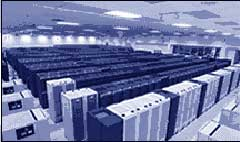

Technook
World’s
Top 5 Supercomputers
RANK: NUMBER TWO
Computer
Brand : HP AlphaServer SC
Name : ASCI-Q
Place : Los Alamos National Laboratory
Speed Rmax : 13.88 Tflops
The Q supercomputing system at Los Alamos National Laboratory
(LANL) is the most recent component of the Advanced Simulation
and Computing (ASCI) program. It is the product of the collaboration
between the U. S. Department of Energy's National Nuclear
Security Administration and the Sandia, Lawrence Livermore,
and Los Alamos national laboratories. ASCI's mission is to
create and use leading-edge capabilities in simulation and
computational modeling. In an era without nuclear testing,
these computational goals are vital for maintaining the safety
and reliability of the nation's aging nuclear stockpile.
Hardware:
The Q system, when complete, includes 3 segments, each providing
10 TeraOPS capability. The three segments will be able to
operate independently or as a single system. One-third of
the final system has been available to users for classified
ASCI codes since August 2002. This portion of the system,
known as QA, comprises 1024 AlphaServer ES45 SMPs from Hewlett
Packard (HP), each with 4 Alpha 21264 EV-68 processors. Each
of these 4,096 CPUs has 1.25-GHz capability, creating an aggregate
10 TeraOPS.
Los Alamos has an option to purchase the third 10 TeraOPS
system from HP. The final Q system will provide 30 TeraOPS
capability:
· 3072 AlphaServer ES45s from Hewlett Packard (formerly
Compaq)
· 12,288 EV-68 1.25-GHz CPUs with 16-MB cache
· 33 Terabytes (TB) memory
· Gigabit fiber-channel disk drives providing 664 TB
of global storage
· Dual controller accessible 72 GB drives arranged
in 1536 5+1 RAID5 storage arrays, interconnected through fiber-channel
switches to 384 file server nodes.
Physical:
Q is housed in the new 303,000 sq ft Nicholas C. Metropolis
Center for Modeling and Simulation. The Metropolis Center
includes a 43,500 sq ft unobstructed computer room and office
space for about 300 staff. In addition, it has the facilities
to support air or water cooling of computers and 7.1 MW of
power, expandable to 30 MW. The final 30T Q system will occupy
20,000 sq ft and use about 3 MW power. The final system will
comprise about 900 cabinets for the 3072 AlphaServer ES45
SMPS and related peripherals. Cable trays 1.8 miles in length
will hold about 204 miles of cable under the floor.
|